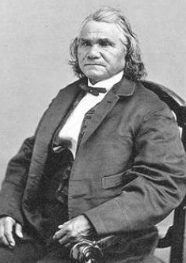
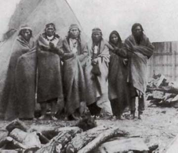
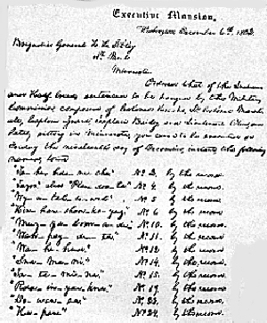
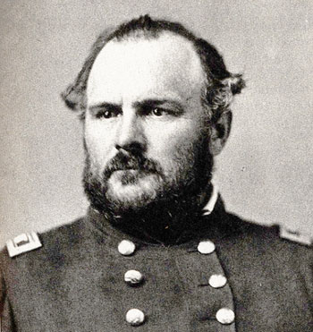

|
In April of 1832, when Lincoln was a young man, he responded
to the governor's call for volunteers to help track down
Chief Black Hawk and his men, who had rebelled and fled the
reservation they were confined to. As was tradition at the
time, Lincoln's regiment chose their own leaders and they
voted him captain. Though Lincoln saw no action, except for
"a great deal of bloody battles with mosquitos", the whole
affair had the effect of reinforcing his rather Whiggish
views of the Indians
Lincoln's Indian Policy
Lincoln's opinion of Indians, which remained basically
the same for his entire life, was a product of the Whig
philosophy he ascribed to. As a Whig, Lincoln's primary
desire was to impose order on all aspects of his existence;
including both his personal life and the world he lived in.
Politically this translated into strong support of
government-assisted expansion across the country. Lincoln
was a humanitarian, and did not hate Indians. However, he
did believe that, unlike white settlers, they were not a
progressive force toward taming the land and imposing order
on it. As such, Lincoln's policies were geared toward
supporting white expansion. These pro-white policies were
not deliberately anti-Indian, but they spelled doom for the
natives nonetheless.
|

Stand Watie, a member of the
Cherokee Nation, and a brigadier general in the Confederate
Army.
|
As President, Indians were an ongoing concern for
Lincoln, and he carried on the policy of "concentration"
began in 1851, the latest in a long line of federal policies
designed to remove Indians from land claimed by the United
States. He pursued this policy in part because he very much
hoped that the treaties that he negotiated would result in
cordial relations with Indians. However, he was also
affected by political considerations. Most Indian tribes had
chosen to avoid involvement in the Civil War, but most of
those that had gotten involved, mostly the Choctaws,
Chickasaws and Cherokees, had sided with the South .
Economically, these tribes had stronger ties to the South.
They also felt a natural affinity for the Confederate cause,
for the Native Americans also had good reason to dislike the
federal government, particularly a Republican government
that had been elected based on an expansionist platform.
Finally, not a few Indians were slaveholders. In any case,
the involvement of some Indians caused many whites to brand
all Indians as Southern sympathizers, and thus Lincoln was
forced to pursue a rather harsh Indian policy, whether he
liked it or not.
The Santee Sioux Uprising
The general tension between the Lincoln administration
and Native Americans was made worse by a number of severe
altercations that erupted between 1861 and 1865, normally in
response to privations caused by the war. The worst of these
|

Prisoners from the Santee Sioux uprising.
|
was an 1862 uprising of Santee Sioux in Minnesota. Poor
harvests combined with the failure of the government to meet
its responsibilities caused many Sioux to starve. By the end
of summer, 1862, the Sioux were desperate. On the morning of
August 17, a hunting party stole eggs from some settlers,
exchanged words with them and then murdered five of them.
When the hunting party returned to the reservation and told
what they had done, the Indian chiefs decided that it was
better to launch a preemptive strike before the whites could
retaliate. After three days of fighting, General John Pope
was dispatched to quell the uprising. "Attend to the
Indians," Lincoln advised, "necessity knows no law." Pope
agreed with Lincoln, and his orders to his troops were very
blunt: "Destroy everything belonging to them and force them
out to the plains unless, as I suggest, you can capture
them. They are to be treated as maniacs or wild beasts."
Pope's troops defeated the Indians easily, and took 1500
prisoners, though many of the Indians escaped to join their
plains cousins, the Teton Sioux. Pope convened a court of
justice, and in 10 days tried 392 Indians, condemning 303 to
death.
Lincoln was not convinced justice had been done. While he
was not necessarily a great defender of Native Americans,
his feeling about the Indians tended to be expressed as a
sort of paternalism; he was fond of speaking to them in a
childish and condescending fashion, and explaining to
visiting Indian chiefs that the Earth was "like a great,
|

President Lincoln's instructions
explaining what to do with the prisoners captured
in the Santee Sioux uprising.
|
round ball." Unlike many whites, however, he certainly did
not wish to see them dead. As such, he used every excuse
possible to reduce the list of Indians set to be executed.
His goal, he told the Senate, was neither to act "with so
much clemency as to encourage another outbreak, on the one
hand, nor with so much severity as to be real cruelty, on
the other." In the end, thirty-eight Sioux were put to death
on the day after Christmas, 1862. Another thirteen hundred
Santee Sioux were relocated to Nebraska.
The Sand Creek Massacre
This did not mark the end of Lincoln's Indian troubles.
Fears of a widespread Indian war permeated the frontier
after the Sioux uprising, and the situation was made worse
when the Teton Sioux made it known that whites would no
longer be allowed to travel through their lands on the Great
Plains. Pope attempted, unsuccessfully, to engage the Teton
Sioux. The fires of war had ignited, and would not be
extinguished for a decade, not to end until the Battle of
Wounded Knee. These fires flared again in 1864, this time
further West, in Colorado.
The trouble in Colorado dated back to 1858, when gold had
been discovered in the Pike's Peak region, on the western
edge of Cheyenne territory. From that point forward white
settlers, going for "Pike's Peak or Bust", flooded across
the area, ignoring the treaties their government had made
with the Indians. As the white presence grew, tension
increased, and outbreaks of violence became increasingly
common. Then, in April 1864, a small, rather typical
incident of frontier conflict turned into a crisis. A
rancher arrived at Camp Sanborn, the government's military
outpost in the region, and reported that a party of
Cheyennes has stolen horses and livestock from his land.
Colonel John Chivington, a minister, politician and
commander of the military district of Colorado, sent forty
soldiers to recover the allegedly stolen animals. The
soldiers encountered a group of Cheyenne Indians with some
livestock, and, without giving the Indians a chance to
explain where they had gotten the animals from, tried to
reclaim them. A clash erupted, and the troops were driven
off by the Indians. The Cheyennes then unleashed their anger
with a series of small raids against white ranchers.
The governor of Colorado, John Evans, was outraged, and
decided that a show of force was needed. He sent a force out
under the command of Lieutenant George Eayre. Eayre, who had
trouble separating friendly Indians from hostile Indians,
immediately set his sights on the large encampment led by
Black Kettle, a staunch pacifist who had met with President
Lincoln and had advised the government on how to maintain
peace in the region. Black Kettle therefore felt no cause
for alarm when the soldiers approached, and sent a lesser
chief, Lean Bear, to greet them. Lean Bear rode toward the
soldiers wearing a medal that he had received as a token of
friendship from Lincoln. Too late, he realized that they
were in skirmish formation, with artillery pointed toward
the camp. He was shot dead, as was his son. This gave the
other Cheyenne time to mount their horses and arm
themselves, and they managed to rout the federal troops, who
retreated.
The confrontation with Black Kettle had the effect of
increasing the violence. Indian raids increased, and
|

Col. John Chivington
|
Governor Evans issued a proclamation authorizing citizens to
kill Indians and take their possessions as payment. At that
point, cooler heads tried to prevail. Influential trader
George Bent called for a peace council. There, Black Kettle
tried to negotiate peace with the whites. Governor Evans,
Colonel Chivington and the other assembled officials did not
trust the Indians, and were unwilling to offer formal peace
arrangements. But Black Kettle and the other Indians, having
misunderstood their interpreter, thought that their mission
had been successful, and left confident that the conflict
with the Coloradans had ended.
Unaware of the misunderstanding, Black Kettle led five
hundred Cheyennes to Sand Creek reservation to camp for the
winter, where they thought they would be free from military
attack. They were wrong. On the morning of November 29,
1864, Chivington led an expedition of several hundred
cavalrymen and four howitzers to Sand Creek and attacked.
The encampment was virtually defenseless, filled with old
men, women and children, as most of the young men were many
miles away hunting for food. The militia improved their odds
by running off all the horses, so as to make escape nearly
impossible. The first volley of cannon and rifle shot ripped
through the camp, and then the soldiers encircled it, firing
point-blank at its occupants. The Cheyennes who survived
that onslaught were attacked with knives and swords. Men
were castrated, and their organs were saved for use as
tobacco pouches. Pregnant women were sliced open, children
were dragged from their hiding places and slaughtered.
Chivington and his men received an enthusiastic welcome
when they returned to Denver. The scalps of Indians were
displayed at the opera house, and the soldiers were treated
like heroes. Outside Colorado, however, the reaction was not
positive. Much of the nation recoiled in horror, and Lincoln
caused an investigation to be launched. Eventually,
Chivington was officially censured by the federal
government. However, in the months following the massacre,
native-white relations did not improve, and Colorado was the
site of constant conflict. The situation remained unresolved
at Lincoln's death.
Source: Christopher Bates for the History 139A website
|